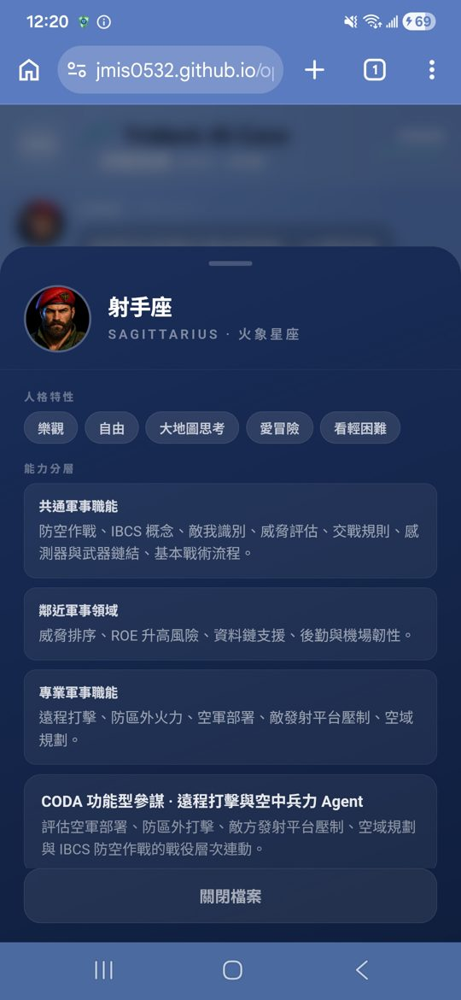
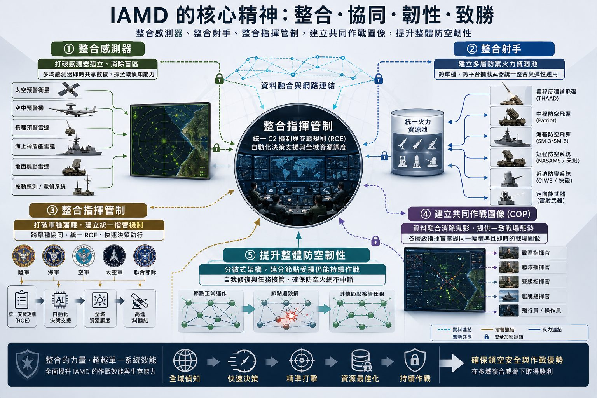
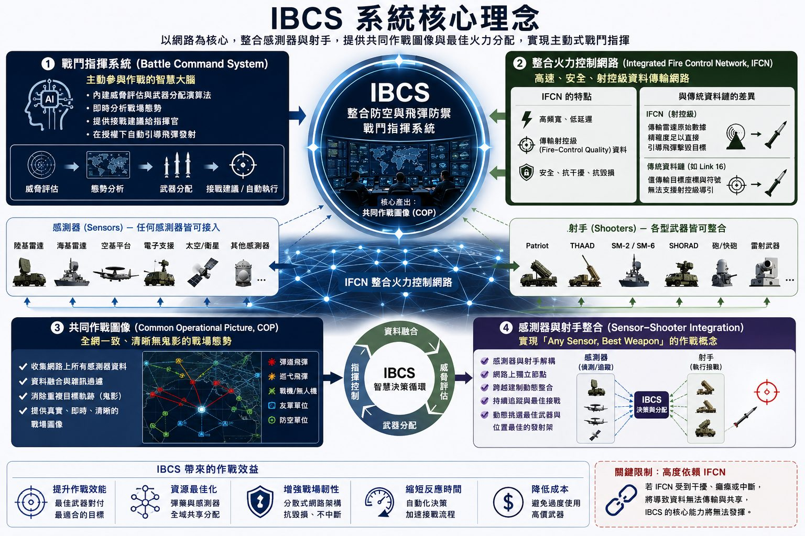
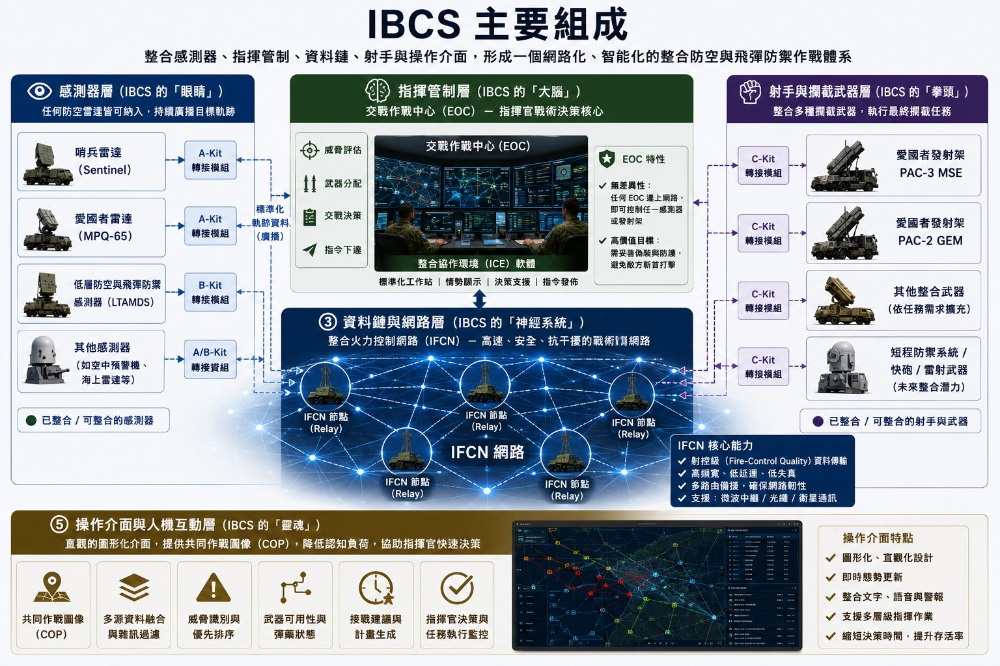
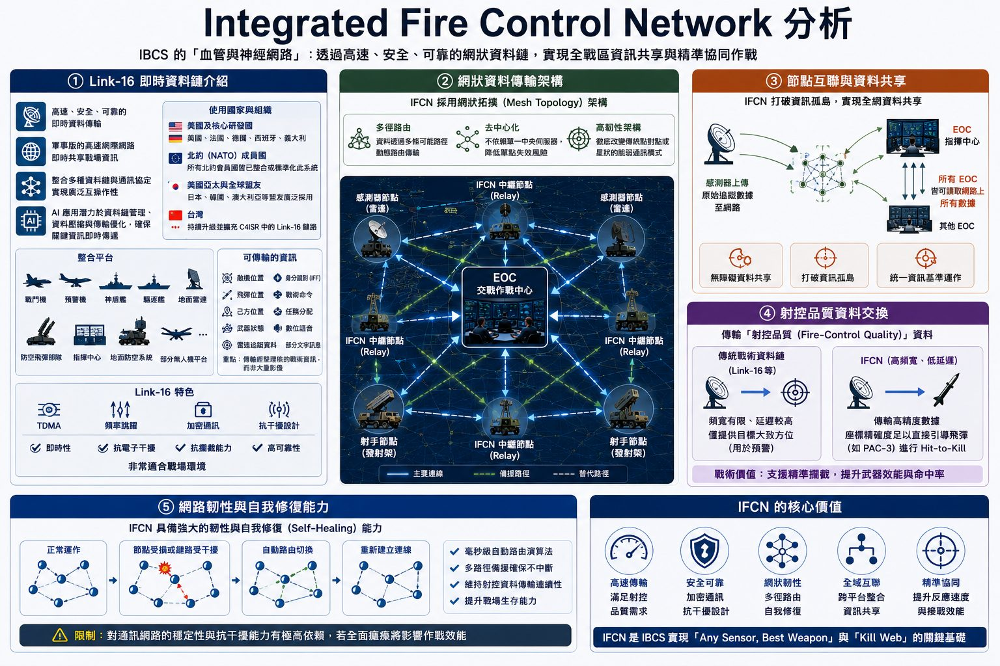
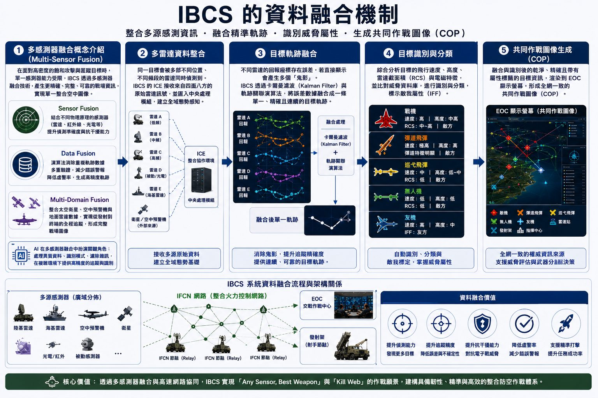
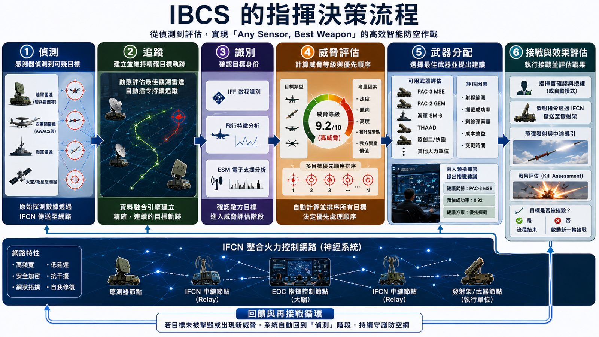

金絲雀偵測
當推論出現矛盾、假設過於樂觀時，系統自動發出早期警訊，避免錯誤資訊被放大。
Consensus Oriented Decision Agents - 多代理共識決策系統
整合防空與飛彈防禦 IBCS 之研究及未來 AI 應用，以 CODA 多代理共識決策系統實作研究報告。
CODA 透過多位具備不同專業與人格特性的 AI Agent 共同討論、交叉驗證，克服單一 AI 模型容易產生的「幻覺」或「思考盲區」。
AI 正從單一模型問答，邁向自主執行能力的 Agentic AI 時代。

模擬多元化戰略參謀團隊：每位 Agent 具備不同人格特性與軍事專業領域。
當推論出現矛盾、假設過於樂觀時，系統自動發出早期警訊，避免錯誤資訊被放大。
特定代理人模擬敵方行動，挑戰方案合理性，對決策進行壓力測試，提升方案穩健性。
即使大多數人支持，仍保留挑戰性異議角色提出不同觀點，防止群體盲從偏差。
架構圖看起來複雜，原理其實很簡單：
依不同專業領域與軍事職能自動產生關鍵字分頭搜尋，並在本機端建立資料庫結合資料。
使用 OpenClaw 擴充插件連接 LINE API，以群組對話呈現 Agents 討論，隨時可生成 PPT、PDF。
依 Agents 討論建議產生報告架構與章節、依需求產生圖表，必要時進行兵棋推演，洞悉實際缺口。
各 Agent 研習報告並針對各章節交互討論，進行客觀、多角度、嚴謹驗證，最終交由使用者微調。

整合感測器、整合射手、整合指揮管制、建立共同作戰圖像、提升整體防空韌性。

IAMD 概念的實質系統：戰鬥指揮系統、整合火力控制網路、共同作戰圖像、感測器與射手整合。

感測器層（眼睛）、指揮管制層（大腦）、射手與攔截武器層（拳頭）、資料鏈及火控網路（神經系統）、操作介面與人機互動（靈魂）。

Link-16 即時資料鏈、網狀資料傳輸架構、節點互聯資料共享、射控品質資料交換、網路韌性與自我修復能力。

多感測器融合概念、多雷達資料整合、目標軌跡融合、目標識別與分類、共同作戰圖像生成。

偵測、追蹤、識別、威脅評估、武器分配、接戰與效果評估。
核心問題：資料鏈共享能否降低防空感測缺口？
真正價值是建立跨區域感測冗餘，而非保證「完全無缺口」。
最大改善不是飛彈射程，而是建立「網路化防空資源池」。
設定：比較現有架構、IBCS 與 AI + IBCS 在中度飽和、高度飽和與多領域攻擊三種情境下的韌性、持續性及決策風險。
CODA 共識：AI + IBCS 具有條件式優勢，不是必然勝出；AI 無法創造不存在的彈藥或接戰通道；系統必須具備人工否決與本地降級模式。
核心問題：在極短預警時間下，台灣防空系統應採 Human-in-the-Loop、Human-on-the-Loop，還是有限度 Human-out-of-the-Loop？
AI 不應被設計成單一「全自動或全人工」模式，而應依威脅類型、目標身分可信度、攻擊速度及戰場區域採分級授權。
核心問題：在飽和攻擊下不可能攔截所有目標，CODA 應如何決定防禦優先順序與成本交換策略？
台灣防空不應以「全部攔截」為目標，而應以「維持防空網存活、保護高價值節點、保存彈藥」為核心。
| 優先級 | 目標類型 | 理由 |
|---|---|---|
| 第一 | 指揮、預警、通信、精準授時節點 | 失效會使整體防空網降級 |
| 第二 | 防空陣地、機場、戰機與機動雷達 | 維持後續作戰能力 |
| 第三 | 發電、能源、港口、交通與後勤節點 | 影響戰時持續作戰 |
| 第四 | 高人口密度區與重要民生設施 | 降低政治與社會衝擊 |
| 第五 | 可修復或低戰略價值目標 | 視彈藥與接戰容量決定 |